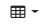
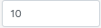
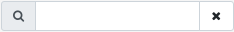
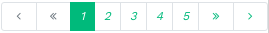

2 Dashboard's Web user interface #Edit source
- File Name: dashboard_webui.xml
- ID: dashboard-webui-general
2.1 Logging in #Edit source
- File Name: dashboard_webui.xml
- ID: dashboard-webui-login
To log in to the Ceph Dashboard, point your browser to its URL including the port number. Run the following command to find the address:
cephuser@adm > ceph mgr services | grep dashboard
"dashboard": "https://host:port/",The command returns the URL where the Ceph Dashboard is located. If you are having issues with this command, see Book “Troubleshooting Guide”, Chapter 10 “Troubleshooting the Ceph Dashboard”, Section 10.1 “Locating the Ceph Dashboard”.
Figure 2.1: Ceph Dashboard login screen #
Log in by using the credentials that you created during cluster deployment (see Book “Deployment Guide”, Chapter 5 “Deploy with cephadm”, Section 5.3.2.9 “Configuring the Ceph Dashboard login credentials”).
Tip: Custom user account
If you do not want to use the default admin account to access the Ceph Dashboard, create a custom user account with administrator privileges. Refer to Chapter 11, Manage users and roles on the command line for more details.
The dashboard user interface is graphically divided into several blocks: the utility menu in the top right-hand side of the screen, the main menu on the left-hand side, and the main content pane.
Figure 2.2: Ceph Dashboard home page #
2.2 Utility menu #Edit source
- File Name: dashboard_webui.xml
- ID: dashboard-util-menu
The top right-hand side of the screen contains a utility menu. It includes general tasks related more to the dashboard than to the Ceph cluster. By clicking the options, you can access the following topics:
Change the dashboard's language interface to: Czech, German, English, Spanish, French, Indonesian, Italian, Japanese, Korean, Polish, Portuguese (Brazilian), and Chinese.
Tasks and notifications
View the documentation, information about the REST API, or further information about the dashboard.
User management and telemetry configuration.

Note
For more detailed command line descriptions for user roles, see Chapter 11, Manage users and roles on the command line.
Log in configuration; change the password or sign out.
2.3 Main menu #Edit source
- File Name: dashboard_webui.xml
- ID: dashboard-main-menu
The dashboard's main menu occupies the left-hand side of the screen. It covers the following topics:
Return to Ceph Dashboard's home page.
View detailed information about hosts, inventory, Ceph Monitors, services, Ceph OSDs, cluster configuration, CRUSH Map, Ceph Manager modules, logs, and monitoring.
View and manage cluster pools.
View detailed information and manage RADOS Block Device images, mirroring, and iSCSI.
View and manage NFS Ganesha deployments.
Note
If NFS Ganesha is not deployed, an information notice appears. See Section 11.6, “Configuring NFS Ganesha in the Ceph Dashboard”.
View and manage CephFSs.
View and manage Object Gateway's daemons, users, and buckets.
Note
If Object Gateway is not deployed, an informative notice appears. See Section 10.4, “Enabling the Object Gateway management front-end”.
2.4 Content pane #Edit source
- File Name: dashboard_webui.xml
- ID: dashboard-cpane
The content pane occupies the main part of the dashboard's screen. The dashboard home page shows plenty of helpful widgets to inform you briefly about the current status of the cluster, capacity, and performance information.
2.5 Common Web UI features #Edit source
- File Name: dashboard_webui.xml
- ID: dashboard-ui-common
In Ceph Dashboard, you often work with lists—for example, lists of pools, OSD nodes, or RBD devices. All lists will automatically refresh themselves by default every five seconds. The following common widgets help you manage or adjust these list:
Click to trigger a manual refresh of the list.
Click 
Click 
Click inside 
Use 
2.6 Dashboard widgets #Edit source
- File Name: dashboard_webui.xml
- ID: dashboard-widgets
Each dashboard widget shows specific status information related to a specific aspect of a running Ceph cluster. Some widgets are active links and after clicking them, they will redirect you to a related detailed page of the topic they represent.
Tip: More details on mouse over
Some graphical widgets show you more detail when you move the mouse over them.
2.6.1 Status widgets #Edit source
- File Name: dashboard_webui.xml
- ID: dashboard-widgets-status
widgets give you a brief overview about the cluster's current status.
Figure 2.3: Status widgets #
Presents basic information about the cluster's health.
Shows the total number of cluster nodes.
Shows the number of running monitors and their quorum.
Shows the total number of OSDs, as well as the number of up and in OSDs.
Shows the number of active and standby Ceph Manager daemons.
Shows the number of running Object Gateways.
Shows the number of Metadata Servers.
Shows the number of configured iSCSI gateways.
2.6.2 Capacity widgets #Edit source
- File Name: dashboard_webui.xml
- ID: dashboard-widgets-capacity
widgets show brief information about the storage capacity.
Figure 2.4: Capacity widgets #
Shows the ratio of used and available raw storage capacity.
Shows the number of data objects stored in the cluster.
Displays a chart of the placement groups according to their status.
Shows the number of pools in the cluster.
Shows the average number of placement groups per OSD.
2.6.3 Performance widgets #Edit source
- File Name: dashboard_webui.xml
- ID: dashboard-widgets-performance
widgets refer to basic performance data of Ceph clients.
Figure 2.5: performance widgets #
The amount of clients' read and write operations per second.
The amount of data transferred to and from Ceph clients in bytes per second.
The throughput of data recovered per second.
Shows the scrubbing (see Section 17.4.9, “Scrubbing a placement group”) status. It is either
inactive,enabled, oractive.